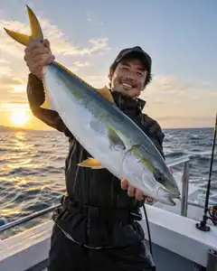
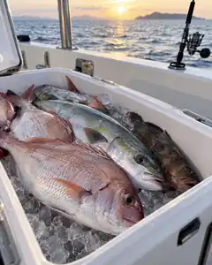

SAMPLE釣果イメージ（サンプル）01
AZUMAMARU CHARTER FISHING
釣る時間まで、最高に。
ROUGH CONCEPT / DEMO — 本サイトは制作中のコンセプト確認用デモです
01 — SCHEDULE & AVAILABILITY
ご予約・空席確認システムとの連携を準備しています。公開まで、このページで概要のみお知らせします。
02 — ON BOARD
エンジン音が凪いだあと、残るのは潮の匂いだけ。
船の上には、陸とは違う速度の時間が流れています。
03 — LATEST CATCH
※ 掲載写真はイメージ生成によるサンプルです。実際の東丸の釣果・魚種を示すものではありません。

SAMPLE釣果イメージ（サンプル）01

SAMPLE釣果イメージ（サンプル）02
04 — FOR FIRST-TIMERS
05 — ABOUT THE BOAT
詳しい仕様・設備の情報は、準備が整い次第このページに掲載します。ここでは、東丸が大切にしている考え方だけをお伝えします。
道具の扱いも、船の上の過ごし方も、乗ってから一つずつ。
その日の海を見てから決める。無理をしないことを、いちばんに。
船体・定員・装備などの詳細は準備中です。公開まで今しばらくお待ちください。
06 — RESERVATION
ご予約システムは現在準備中です。公開まで、今しばらくお待ちください。